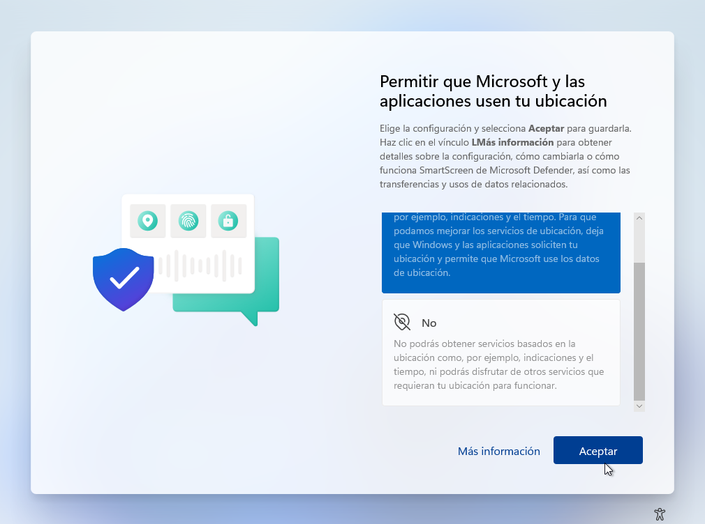

Únete a la UNAD conoce que necesitas aquí!
Inicio
Articulo
Articulo
Academico
Multimedia
Multimedia
Video
Audio
Instalación Windows 11
En este contenido de conocimiento académico mostrare como realizar la instalación paso a paso del nuevo Windows 11 dejando todas las herramientas para realizar esto al final del articulo por lo que empezaremos con esto:
Primero debemos de descargar la ISO de Windows.
ISO de Windows 11
Windows 11
Luego de esto preparamos la USB con el programa RUFUS con la siguiente configuración.
Rufus
Ya hecho esto configuramos el boot de la BIOS de la computadora para iniciar de manera adecuada la instalación del Windows 11.
Elegimos el idioma y las opciones de teclado de nuestra preferencia.
Presionamos instalar y proseguimos.
Si disponemos de una clave la introducimos si no proseguimos con la opción no tengo clave del producto.
Aceptamos los términos de uso de licencia.
Elegimos instalación personalizada.
Elegimos el disco duro de preferencia para realizar la instalación.
Después de esto empezara a instalarse el sistema operativo.
Ya acabada la instalación realizamos las configuraciones generales de la siguiente forma:

Luego de estas configuraciones básicas el instalador empezara a buscar actualizaciones disponibles.
Después empezaran las configuraciones finales.
Finalmente estaremos en el escritorio principal y estaremos listos para disfrutar del nuevo Windows 11.

.png)
.png)
.BMP)
.BMP)